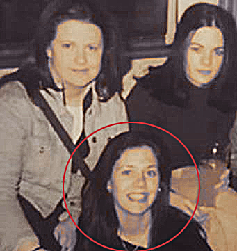

Monja yo, ¡ jamás !
La verdad es que nunca pensé en ser monja. Miles de otras cosas sí pero… monja, ¡ jamás !. Naci el 14 de noviembre de 1982 una pequeña pero muy valiosa ciudad del Norte de Irlanda llamada Derry. Por razones políticas hay una gran división en el Norte entre protestantes y católicos. Cuando vivía en mi país este conflicto y discordia se podían palpar claramente. Siempre he vivido en una zona y en una familia predominantemente nacionalista, luchamos por una Irlanda libre que consistía en una ruptura radical con Gran Bretaña. Quizás es por el hecho de
venir de una familia y un
entorno tan radical y guerrero que yo siempre he sido muy « o todo o nada». Aunque éramos católicos nunca hemos sido fervientes. Recibí los sacramentos de bautismo, comunión, confirmación, confesión pero nunca entendí (tampoco tenía mucho interés) lo que estaba recibiendo.
La Adivinadora que leyó las cartas a mi madre decía que sería así.
A los catorce años en el periódico vi un anuncio que decía: «Para actores aspirantes que sueñan con un día llegar a la gran pantalla, este taller es tu oportunidad para ganar experiencia y consejo para poder trabajar en la televisión y el cine». Asistí al taller y gracias al éxito de aquello empecé a formar parte de una agencia de actores. Tuve mi primer trabajo en la televisión en el canal cuatro de Inglaterra y con quince años, ya trabajaba como presentadora de programas juveniles de televisión en el Canal 4 –uno de los más importantes del Reino Unido «Pero esto de ser
presentadora no es para mí» Nikelodeon ya estava en conversaciones con mi manager.A los dieciocho tuve mi primer papel en la gran
pantalla ! una película ¡. Me encantaba el teatro, tanto hacerlo como
escribirlo, leerlo y dirigirlo. Mi meta era Hollywood…! en serio ¡. ¿Por qué no podía ser así? ¡Era eso o era Nada.¡ Además la Adivinadora que leyó las cartas a mi madre decía que sería así.

¿Que es eso que llamán Eucaristia?
Cuando tenía dieciséis años y trabajando en la televisión empecé a experimentar un vacío y no entendía lo que estaba pasando dentro de mí. Por esta época una amiga mía me llamó por teléfono invitándome a ir España. Que era un viaje gratis, que no sé quién lo había pagado.Mientras ella me hablaba yo sólo pensaba: «España, gratis, sol, playa, fiesta… ¡Claro que voy!» Yo sinceramente pensaba que íbamos a ir a una islita turística como Ibiza, pero este viaje resultó ser un encuentro de Semana Santa en un pueblito de España donde no había nada de playa, ni de sol, ni de fiesta
ni nada de nada.Cuando me enteré que iba a ser un encuentro de Semana Santa y que iba a ser en un monasterio con monjas y sacerdotes, por supuesto no me hizo ni pizca de gracia, pero tenía que ir porque mi nombre estaba en el billete de avión, y la verdad es que no sé por qué pensaron en mí ya que era muy superficial y cabra loca de las montañas Me acuerdo que durante este encuentro de Semana Santa con el Hogar había charlas de formación, reuniones por equipos, oración, misa…yo sólo iba a las cosas donde sabía que si no iba lo iban a notar, por ejemplo en las reuniones por
grupos. Allí conocí al Padre Rafael Alonso, nuestro fundador, él justo estaba en mi grupo. Todas las chicas en mi grupo hablaban de las maravillas de la Eucaristía (que creo que era el tema del encuentro) y cuando me preguntaron a mí que qué pensaba, quité el cigarrillo de mi boca y pregunté que qué era la Eucaristía. Cuando me explicaron lo que era, no experimenté
ninguna iluminación de la fe, simplemente respondí con un: «Ah» estática y fastidiada .
! Ni coro de ángeles ni paloma blanca ... !
Llegó el día de Viernes Santo. Asistí a los oficios de este día con una actitud totalmente pasiva. Yo veía que algunos hacían la genuflexión y después besaban los pies de Jesús clavado en la cruz. Era la primera vez que veía algo así. Yo también me puse en la fila, no movida por ningún impulso piadoso ni ferviente, simplemente lo hice porque es lo que tocaba hacer. Cuando llegó mi turno, me puse de rodillas y besé los pies de Jesús. Aquel sencillo acto no duró más de unos diez segundos, besar la cruz… algo aparentemente trivial tuvo un impacto muy fuerte dentro de mí. Yo no
sé explicar exactamente lo que pasó, no vi ningún coro de ángeles ni vi ninguna paloma blanca que venía desde el techo hacia mí, pero tuve la certeza de que por mí el Señor estaba en la cruz y junto con esta convicción, me acompañó un vivo dolor algo similar a lo que había experimentado de pequeña cuando hacía el Vía Crucis. Al regresar a mi banco, yo ya tenía una huella dentro que no tenía antes. Yo tenía que hacer algo por Él, que había dado su vida por mí. Confieso que no viví muy bien el viaje, me atraían más la tiendas de Italia que las iglesias y catedrales. Pero, ¿no
es verdad que el Buen Pastor dejó las noventa y nueve ovejas para ir a buscar la oveja despistada? Pues lo mismito hizo conmigo, me buscó hasta que encontró el momento oportuno para decirme: «Quiero que tú vivas como ellas». «Ellas» eran las hermanas, y vivir «como ellas» significaba ¡ser monja! Subía el volumen de la música que estaba escuchando en el autobús, quizá así no podía oír nada y podía olvidar lo que Dios me estaba pidiendo. Empecé a pensar en todo lo que tendría que dejar: mis sueños, las fiestas, mi novio… la lista parecía interminable y por supuesto esto fue
seguido de un: «yo no puedo vivir esta vida, para mi es imposible, etc.». Sin embargo el Señor me aseguró que si Él pide algo, siempre da la gracia y la fuerza para vivirlo.
A una edad muy niña empecé
Lamentablemente, a una edad muy joven empecé a salir a fiestas y discotecas, y a meterme en el ambiente de este mundillo de la T.V. que arrolla. Fumaba, bebía y consumia drogas. El tema del alcohol luego llegó a ser un problema para mí, y me era inviable vivir sin un paquete de cigarrillos. Al regresar a mi país seguía viviendo como antes (sí señores y señoras…) «con el peso de mis miserias volví a caer en estas cosas terrenas y a ser reabsorbida por las cosas acostumbradas, quedando cautiva en ellas. Vivía mal, vivía de pecado mortal en pecado
mortal. Bebía mucho, fumaba mucho, me drogaba mucho. Seguía con mis amigas, con mi novio. Seguía igual. No tenía la fuerza de cortar con todo eso. Pero claro, no tenía la fuerza porque no le pedía al Señor que me ayudara». Una noche cuando estaba de fiesta con mis amigos el Señor me dijo: «¿Por qué me sigues hiriendo? . Estaba YO Bomitando en el baño de una discoteca totalmente hebria y drogada, » yo entendí que mi manera de vivir y mi falta de respuesta a lo que el Señor me estaba pidiendo me hacían mucho daño a mí misma y a Dios . No fue hasta
que fui a Inglaterra a grabar una película, que experimenté de una manera muy profunda la gran cavidad que había en mi alma. A pesar de estar con gente famosa, comer en restaurantes costosos, quedar en hoteles de no sé cuántas estrellas, realmente sentí que en mis manos tenía todo lo que pudiera desear, y a la misma vez que yo era una pobre miserable que no tenía nada.
¡ Voy a ser monja !
La vocación religiosa es un don tan grande que realmente confunde a la persona elegida. Dios fija su mirada en una pobre alma para vivir con y en ella y así ayudarle a salvar el mundo. Esto sí es una locura, pero ¡bendita locura! Nosotros sí estaríamos locos de no responder a lo que Dios pide de cada uno de nosotros, porque lo que Él pide siempre es lo mejor. Creo que ya pueden imaginar la reacción de todo el mundo cuando yo les decía que tenía vocación y que quería dejar todo para entregarme al Señor por completo…« ¡Tú estás loca!» Allí empezó otro tipo de película, Ni los
ruegos de mi familia, ni las promesas de mi manager consiguieron detenerme. Lo importante es que yo sabía con una fuerza que no venía de mí lo que tenía que hacer. Años después cuando un primo mío me vio ya vestida con el hábito y a punto de hacer mis votos perpetuos me dijo: «Clare, yo te conocía antes de ser monja, y verte ahora así…solo puedo decir o que tú estás muy loca o que Dios realmente existe» En Isaías 55: 8 dice: «Porque mis pensamientos no son
vuestros pensamientos, ni vuestros caminos mis caminos, dice el Señor». Dios sabe lo que hace, nosotros sólo tenemos que fiarnos de él. Y el 11 de agosto de 2001 entrege mi vida a Dios como candidata de las Siervas del Hogar de la Madre. Y Tras los años de candidatado y noviciado, profece mis votos perpetuos el 11 de febrero de 2006.

Yo no le tengo miedo a la muerte
La Hna. Mary Donovan tuvo la oportunidad de encontrarla en las Navidades de 2015, después de un tiempo sin verla. Se quedó muy impresionada. «Su cara y su voz estaban totalmente gastadas por todo el trabajo y apostolado». A la Hna. Clare todo le parecía poco por Cristo. Lo demuestra este fragmento del e-mail que dirigió al P. Rafael el 8 de abril de 2015, en el que decía: «Aunque el Viernes Santo es un día triste, no sé explicar la alegría y el deseo entusiasmado que tengo de sufrir por el Señor. Todo me parece poco: la falta de sueño, el ayuno, el calor, el tener que
atender a la gente… Todo lo que puede costar me llena de alegría, porque me hace estar cerca del Señor. (…) Estuve un buen rato delante de la cruz pidiendo la gracia
de nunca, nunca olvidar todo lo que el Señor y la Virgen han sufrido por mí».
Hacía poco que habían regresado de Misa en la parroquia del pueblo. Era ya de noche, porque en Ecuador poco después de las seis de la tarde ya es noche cuando comenzó el terremoto. Terremoto que acabo con la vida de la Hna. Clare de 33 años y de las otras cinco jóvenes aspirantes a Siervas del Hogar de la Madre: Mª Augusta, Mayra, Jazmina, Valeria y Catalina, el cual comenzó a las ( 06:58 pm ) del sábado 16 de abril de 2016. En la casa había once personas: cuatro hermanas y siete chicas. Estaban divididas en dos grupos. Las
tres hermanas y dos chicas que fueron rescatadas vivas estaban en la zona de la vivienda de las hermanas, en el segundo piso. La hna. Clare con el grupo de jóvenes fallecidas estaban en el primer piso. Habían tenido una clase de guitarra y estaban a punto de reunirse todas para rezar el rosario en comunidad. No hubo tiempo. Ese día, en la comida, la conversación había girado precisamente en torno al tema de la muerte. La Hna. Clare dijo con mucha seguridad: «Yo no le tengo miedo a la muerte.
¿Por qué voy a tener miedo a la muerte, si me voy a ir con Aquel con el que siempre he anhelado estar toda mi vida?»
Si te interesa saber más de la Hna. Clare Crockett peudes ir a los siguientes enlaces.